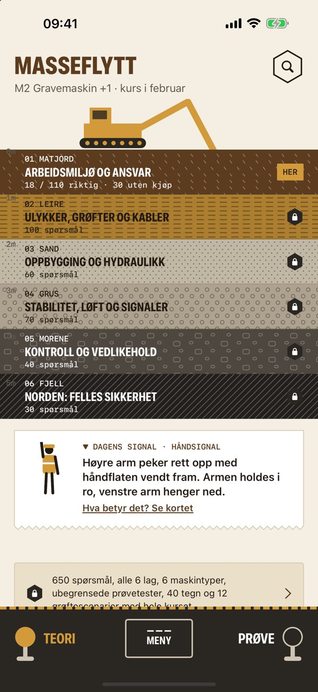
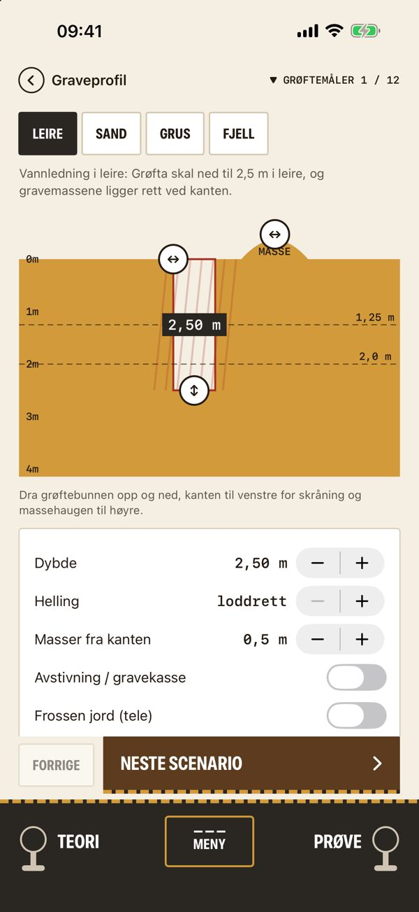
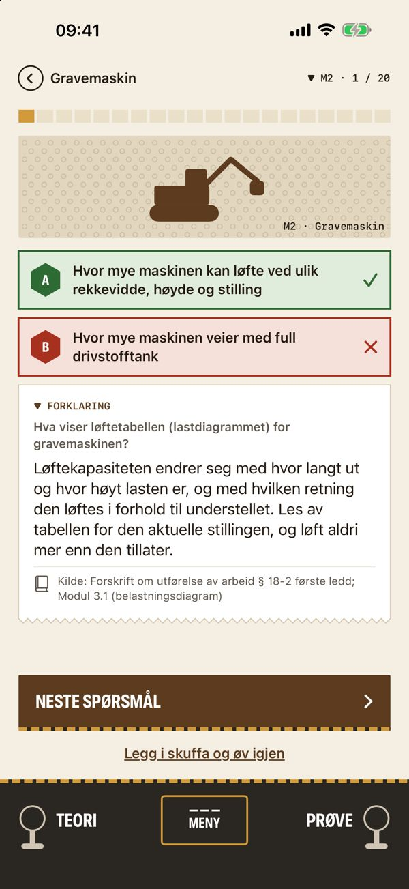

Teorien for masseforflytningsmaskiner lag for lag
Masseflytt tar deg gjennom teorien for masseforflytningsmaskiner lag for lag, som en graveprofil: arbeidsmiljø og ansvar, ulykker, grøfter og kabler, oppbygging og hydraulikk, stabilitet og løft, kontroll og vedlikehold. Hvert svar har en forklaring med kilde.



Teori och säkerhet för anläggningsmaskiner (på norska)
Masseflytt går igenom teorin för anläggningsmaskiner lager för lager. Appen är på norska och lovar inget förarbevis.
Teori og sikkerhed for entreprenørmaskiner (på norsk)
Masseflytt gennemgår teorien for entreprenørmaskiner lag for lag. Appen er på norsk og lover intet bevis.